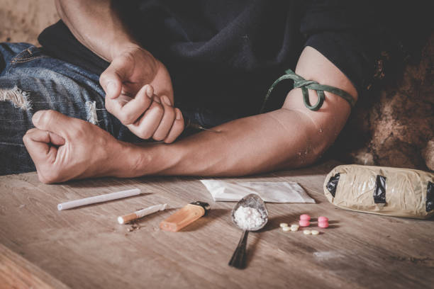

Nossa missão
Construir comunidades mais fortes por meio de projetos sociais, educação e inclusão.

Quem somos
Somos a ONG Viver de Novo, dedicada a acolhimento, reabilitação e inclusão social de grupos em vulnerabilidade.
- Missão: promover recuperação e dignidade
- Visão: comunidades seguras e acolhedoras
- Valores: transparência, empatia e colaboração
Equipe
Nossa equipe interdisciplinar inclui assistentes sociais, psicólogos, educadores e voluntários comunitários.
Conquistas
- Reabilitação e acompanhamento de 150 pessoas no último ano
- Campanhas de arrecadação com 95% de transparência verificada
- Parcerias com escolas locais e centros de saúde
Contato
Rua corin, 123 — São Paulo — SP
Email: viverdenovo@contato.org
Telefone: (11) 95548-7589